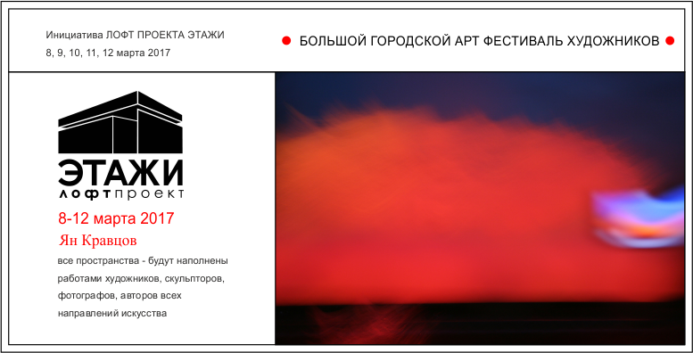
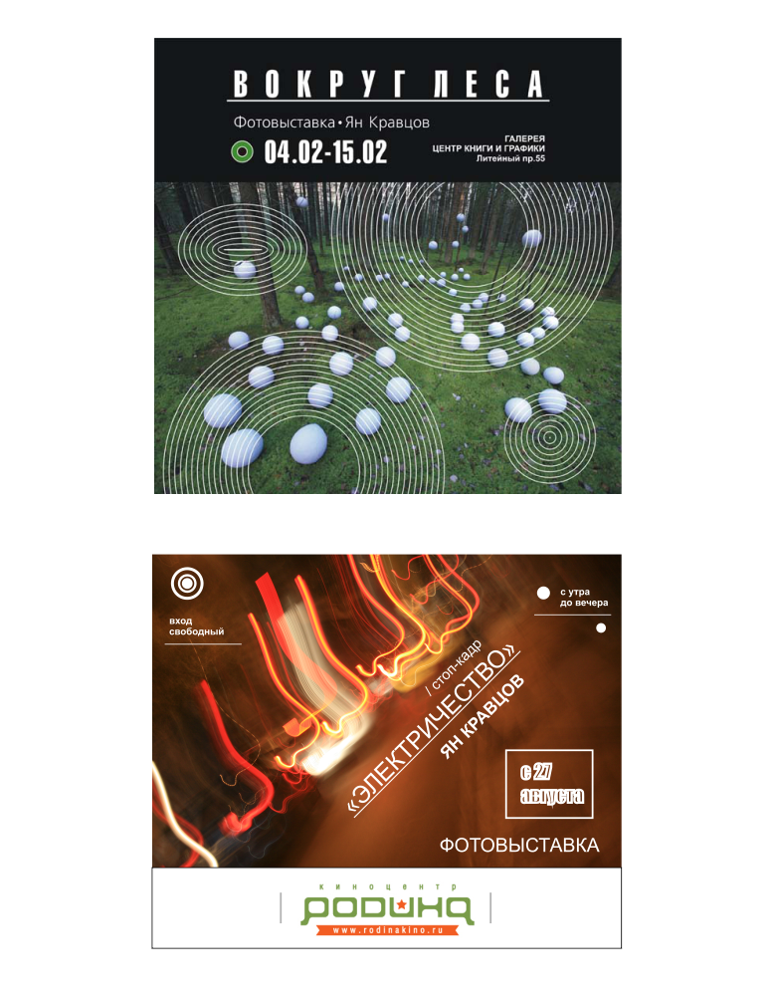
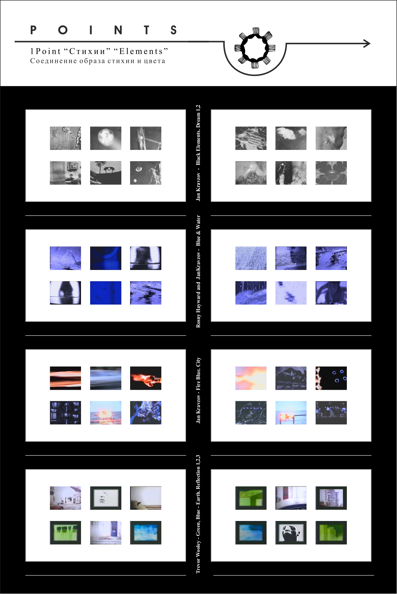
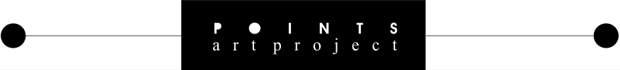
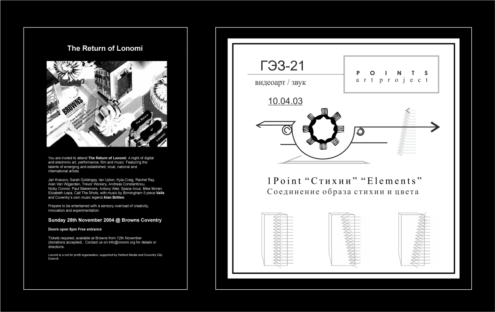
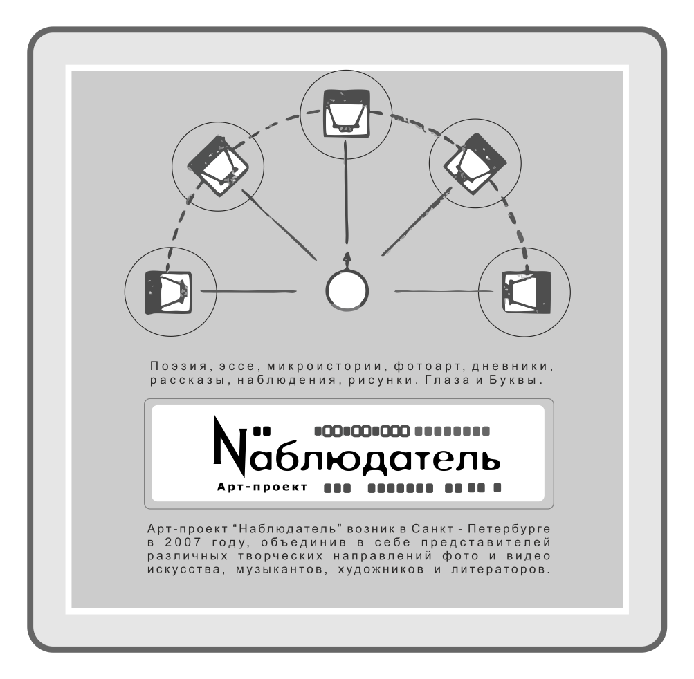
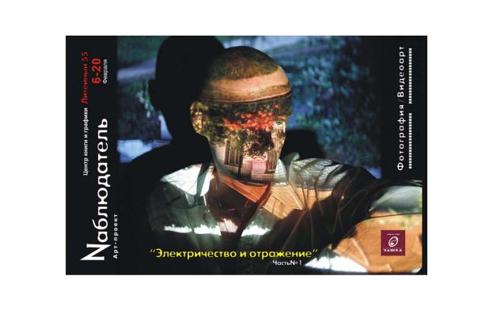
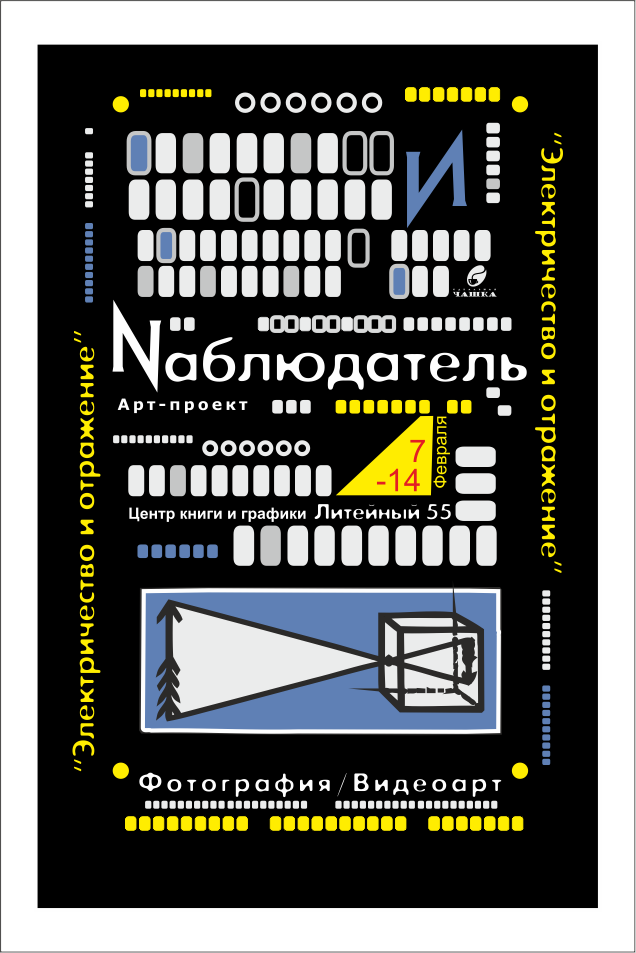

Points - был создан как русско-английский проект, сочетающий в себе различные формы
и направления современного искусства: видеоарт, экспериментальная электронная музыка,
инсталляция.
Целью проекта является исследование окружающего мира. Это попытка представить
свои наблюдения в визуальных образах создаваемых по определенному методу.
Суть метода состоит в соединении предложенных элементов наблюдения.
1-st Point, была предложена тема - стихии.
Метод исследования подразумевал сочетание способов (путей) восприятия стихий.
внешнего мира через визуальные образы, музыку, цветовые ассоциации.При этом
каждый из участников проекта мог выбрать главным и определяющем
в своей работе элементом любой из предложенных.
Участники 1-st Point и их работы:
Trevor Wooley - Green, Blue - Earth. Reflection 1,2,3
Rosny Hayward and
Jan Kravzov - Blue & Water.
Jan Kravzov - Fire Blue.
Jan Kravzov - Black Elements. Dream 1,2
Music by Stepan (Vidna Nebo)



